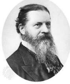

For the functionalists, inequality is not only inevitable but also positive and necessary for society to properly function. Émile Durkheim was one of the more prominent proponents of functionalism. He believed that individuals see themselves as part of society’s bigger picture. An interesting point to look at is the positive contribution of inequality to the stability and functioning of society.
|
Davis and Moore Recognized the concept of meritocracy where ability determines the type and prestige of the job held by an individual. Tumin Pointed out that ability often does not determine an individual’s success, but gender and class are better predictors of who obtains positions associated with wealth, power, and prestige. |
|
Symbolic Interactionist Perspective of Social Inequality  George H. Mead
|
| When it comes to stratification structures, the symbolic interactionists see power as relative, that it can be negotiated between people with different capacities and interests. They see that there is mutual understanding among people that they are part of a hierarchical system and they have come to accept it. |